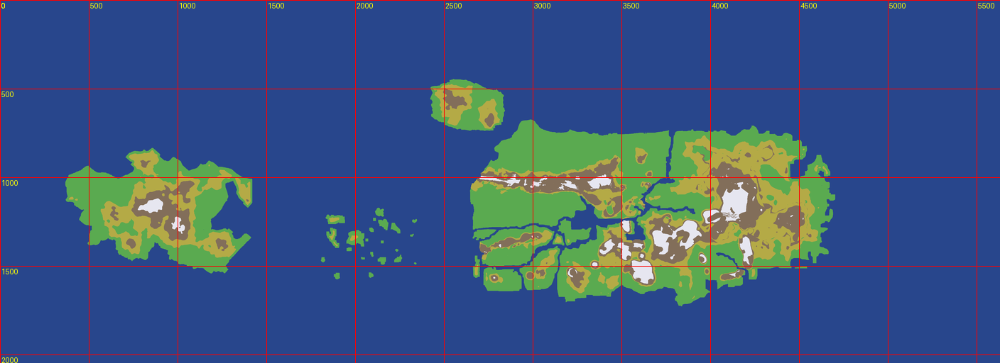

HOI4 地形区域标注器
笔刷：
山地
雪山
丘陵
平原
森林
沙漠
降级
海洋
湖泊
画法：
闭合多边形
线段（→山脊）
线宽:
px
| 缩放：
−
100%
+
重置
|
撤销点
完成当前 (Enter)
取消 (Esc)
👉
左键
加点 ·
Enter
闭合 ·
Esc
取消 ·
Ctrl+Z
撤销点 ·
Ctrl+滚轮
缩放 · 滚动条拖动查看

就绪. 点一下地图试试.
已标记区域 (
0
)
导出 JSON
复制到剪贴板
清空全部
用法
1. 选笔刷类型
2. 在地图上点几个点
3.
Enter
闭合
4. 点"复制到剪贴板"
5. 粘贴给 Claude